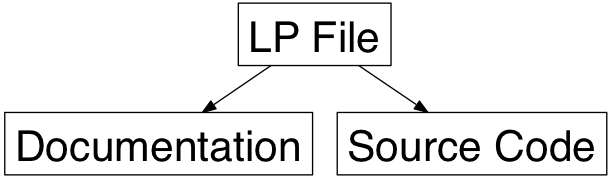
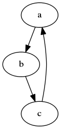
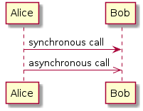

Introduction to Literate Programming
Welcome to a brief tutorial on literate programming in org-mode.
The following began as the basis for a workshop for the PDX Emacs Hackers meetup, but since everyone couldn’t attend, I decided to expand it into a tutorial. I assume you understand the basics of Emacs and as well as familiarity with org-mode for creating exported documents.
As you probably know, Org is pretty large, and the features for writing, evaluating and connecting blocks of source code in a document are extensive, and documenting them all is a daunting task. I hope this tutorial is a good start, but if I glossed over something you feel I should include, please let me know.
Warning: The examples are pretty lame.
Requirements
During my workshop, I mentioned needing version v8.2.10 of org-mode
(or better). Since org comes with Emacs, you may already have a
version, so type: C-h v and org-version, to see if everything in
this tutorial will work (most things will, but…).
If you need a newer version, use our ELPA friend by running this code:
(when (>= emacs-major-version 24) (require 'package) (add-to-list 'package-archives '("org" . "http://orgmode.org/elpa/") t) (package-initialize) (package-refresh-contents) (package-install "org"))
That should do it. You may want to also install org-plus-contrib.
During this tutorial, I wanted to demonstrate many of the available language interfaces, but this means, you’d have to have a slew of interpreters installed locally, so in this tutorial, I hope you have the following:
- Shell (sorry, this might be hard for you Windows people)
- Python
- Ruby
However, you’re a smart cookie, so feel free to translate these silly examples into your favorite language.
Background
Before we dive into how org-mode does literate programming, perhaps I should briefly describe literate programming.
Why Literate Programming?
Literate Programming was first invented by Donald Knuth in 1980’s in an attempt to emphasize communication to other members on your team. As Donald Knuth once wrote:
“Let us change our traditional attitude to the construction of programs. Instead of imagining that our main task is to instruct a computer what to do, let us concentrate rather on explaining to human beings what we want a computer to do.”
Wanting programs to be written for human understanding, with the order based on logic of the problem, and not constrained to deficiencies in the programming language, we create a literate programming document that generates a document for people and the source code files:

The idea is to invert code peppered with comments to prose interjected with code.
While the resulting source code tangled from a literate programming document, may look the same as a source file coded directly, this idea did not change our industry (although it is used, to various degrees, in niche circles).
Why Org?
Knuth’s original literate programming approach was text with
minimal editor support, as he only wrote the noweb program to
create (weave) the documentation and write (tangle) the source
code.
From my perspective, literate programming can only be useful with help from an editor, for instance the iPython’s notebook. Unlike iPython’s JSON storage of the files, I think everything should be readable text, as Carsten Dominik wrote:
“In the third millennium, does it still make sense to work with text files? Text files are the only truly portable format for files. The data will never get lost.”
So if you buy into literate programming, org-mode is fookin’ brilliant, especially since we already use org-mode for everything else, right?
Advantages?
Some of the advantages of using org-mode for your source code:
- Better documentation for your source code
- Great for team communication for issues and problems
- Clarification of your own thoughts of complicated situations
- Note-oriented REPL for investigating new libraries and APIs
- Inter-language facility for using the best tool for the job (for instance, querying a database, manipulating it with a general purpose language)
- Org’s organizational features, like Agendas and tasks
A Warning
The software world of the 1980s is quite different than our current landscape, as engineers are more connected and work in teams, but they don’t often use the same tools. Even if your team doesn’t use Emacs, you may still find org-mode’s approach useful.
First, it is a good way to work through complicated algorithms, and once you have something good, commit the resulting source code (as the prose you write become comments in the code), or when you get stuck, you can send your notes to the rest of the team for feedback.
Second, org-mode files can be a thoughtful repl as each block can be evaluated separately, and the results can be fed back to other blocks… but I’m getting a head of myself.
Exporting Documents
The goal of using an org-mode file, with the methods I present here, is exporting to some document, either HTML, mail messages, Wiki, etc. While Org is really good for technical papers, my focus here is on code and programming.
I’ll just mention that you can use the LaTeX support to write things like the following:
- Unicode References :: for instance, \alpha, \beta and \gamma.
- Subscripts :: like Hydrogen atoms, H_2, and Water, H_{2}O.
- Superscripts :: The mass of the sun is 1.989 x 10^30 kg.
- Embedded Equations :: Surrounded with either single =$=, like $a^2=b$,
or escaped parenthesis, like: \( b=\frac{1}{2} \)
- Separated equations :: Either in double =$$= or escaped brackets, like
this: $$ a=\frac{1}{2}\sqrt{2} $$ or this: \[ a=-\sqrt{2} \] or this:
\begin{equation}
x=\sqrt{b}
\end{equation}
#+OPTIONS: tex:t
And turn that into this pretty HTML:
- Unicode References
- for instance, α, β and γ.
- Subscripts
- like Hydrogen atoms, H2, and Water, H2O.
- Superscripts
- The mass of the sun is 1.989 x 1030 kg.
- Embedded Equations
- Surrounded with either single
$, like , or escaped parenthesis, like: - Separated equations
Either in double
$$or escaped brackets, like this:or this:or this:
Basics
This tutorial is really a workshop, so fire up Emacs, and create an org-mode file, and let’s get cracking.
Create the following source code block (no, case doesn’t matter):
#+BEGIN_SRC emacs-lisp (directory-files ".") #+END_SRC
- Type
C-c C-cto execute the command and note the results, are inserted back into your file… we’ll use that to our advantage later. - Type
C-c ’(apostrophe) to edit the block in the language’s mode. This allows you to gain benefit of paredit and whatnot.
Note: When I’m wrong and something doesn’t work (notice I didn’t use the term if), pop over to the org-mode manual, and then send me an errata.
Shortcuts
If you are using a newer version of Emacs (not v22) or a later version of org-mode (installed from ELPA), use Org Templates:
- Create a block quickly by typing:
<sand hitTAB - If not, you can try yasnippets
- You can hit
C-c C-canywhere fromBEGINtoEND - Jump to next block in your file with
C-c M-fand backC-c M-b
Good Configuration
To syntax highlight your code, set the following in your .emacs
init file:
(setq org-confirm-babel-evaluate nil org-src-fontify-natively t org-src-tab-acts-natively t)
The last variable removes the annoying “Do you want to execute”
your code when you type: C-c C-c
Language Support
While many programming languages are supported, not everything is (not too difficult to add your own, tho). Let me go through a few popular ones and note a few differences.
Ruby Example
Let’s try re-creating our Lisp example in Ruby:
#+BEGIN_SRC ruby
Dir.entries('.')
#+END_SRC
If C-c C-c doesn’t work, you may have to pre-load the
support: M-x load-library and then ob-ruby
You can load yer language beforehand by adding the following to .emacs):
(require 'ob-ruby)
Python Example
Notice that Ruby, like Lisp, uses the results of the last expression.
Python, on the other hand, expects the results to come from an
explicit return:
#+BEGIN_SRC python
from os import listdir
return listdir(".")
#+END_SRC
Shell Example
Most languages take the resulting values as the results. The shell, on the other hand, uses the results that are printed to standout out:
#+BEGIN_SRC sh ls -1 #+END_SRC
If C-c C-c doesn’t work, you may have to pre-load the
support: M-x load-library and then ob-sh
All Favorite Languages
If, like me, you are a polyglot programmer, you may want to
add something like following to your .emacs file:
(org-babel-do-load-languages 'org-babel-load-languages '((sh . t) (js . t) (emacs-lisp . t) (perl . t) (scala . t) (clojure . t) (python . t) (ruby . t) (dot . t) (css . t) (plantuml . t)))
Block Settings
Most of the interesting stuff happens by setting various block parameters (also called header parameters). Code blocks can have zero or more header parameters.
First let’s dive into the various ways they can be defined, and then discuss most of the specific parameters after, but I need a parameter we can use.
Example: dir
As an example of how to set a parameter, let’s look at the dir parameter, which sets the directory/folder for where a code block executes:
#+BEGIN_SRC sh :dir /etc ls #+END_SRC
Type C-c C-c to execute this, and you’ll notice a lot more entries
in that directory… assuming, of course, you have a /etc directory.
An interesting aspect of this parameter is when you use Tramp references to have code block remotely executed:
#+BEGIN_SRC sh hostname -f #+END_SRC #+RESULTS: : blobfish #+BEGIN_SRC sh :dir /howardabrams.com: hostname -f #+END_SRC #+RESULTS: : goblin.howardabrams.com
Setting Parameter Locations
Parameters can be set in different locations. Here is the list from most specific to most general:
- Inline with Header Block, or above Header Block
- Defaults for Blocks in a Section
- Defaults for Blocks in entire Document
- Defaults for Every Document
Having a particular parameter set for all documents isn’t very useful to me, but this can be done by setting either of these list variables:
org-babel-default-header-argsorg-babel-default-header-args:<lang>
Note: You can set parameters when a block is called, but we’ll talk about this later.
Too Many Parameters?
Setting parameters inline with Header Block is fine with few parameters, but org-mode supplies lots of parameters, and if you have too many, you can bring one or more up above block. For instance, the following are equivalent:
#+BEGIN_SRC sh :dir /etc :var USER="howard" grep $USER passwd #+END_SRC #+HEADER: :dir /etc #+BEGIN_SRC sh :var USER="howard" grep $USER passwd #+END_SRC #+HEADER: :dir /etc #+HEADER: :var USER="howard" #+BEGIN_SRC sh grep $USER passwd #+END_SRC
Section Default Parameters
Parameters that should be the same for all source blocks in a section can be placed in a property drawer. Perhaps, you should just run through this on your own by following these steps:
- Create a header section in your org file
- Type:
C-c C-x p - For
Propertyenter:dir - For
Valueenter:/etc
Jump to the :PROPERTIES: drawer, and hit TAB to see the contents,
but it should look something like:
* A New Section
:PROPERTIES:
:dir: /etc
:END:
#+BEGIN_SRC ruby
File.absolute_path(".")
#+END_SRC
#+RESULTS:
: /etc
Language-Specific Default Values
You can specify language-specific header arguments. Try the following:
- Type:
C-c C-x p - For
Propertyenter:header-args:sh - For
Valueenter::dir /etc - Type:
C-c C-x p - For
Propertyenter:header-args:ruby - For
Valueenter::dir /
You should have something that looks like:
* Another Section
:PROPERTIES:
:header-args:sh: :dir /etc
:header-args:ruby: :dir /
:END:
#+BEGIN_SRC sh
ls -d $(pwd)
#+END_SRC
#+RESULTS:
: /etc
#+BEGIN_SRC ruby
File.absolute_path('.')
#+END_SRC
#+RESULTS:
: /
Note: Some parameters can only be set with header-args.
Default Parameters for Document
To set a parameter for all blocks in a document, use the
#+PROPERTY: setting placed somewhere in your document.
#+PROPERTY: dir ~/Work
Notice these parameters do not have initial colon.
Language specific ones, however, do:
#+PROPERTY: header-args:sh :tangle no
Note: They aren’t registered until you hit C-c C-c on them.
Header Parameter Types
With the basics in place, the rest of this tutorial describes the source block controls done by parameter settings. I’ve separated and organized these based on its usage:
- Evaluation Parameters
- like
dir, affects how a block is executed - Export Parameters
- affects how a block or the results from execution is shown when it is exported to HTML
- Literate Programming Parameters
- connecting blocks together to change the actual source code
- Variable Parameters
- variables for a source block can be set in various ways
- Miscellaneous Input/Output
- of course, you have to have a collection of parameters that don’t fit elsewhere
Evaluation Parameters
The following parameters affect how a block is evaluated.
Results
When you execute a block, what do you want out of it?
- results of the expression?
- outputted results?
Let’s look at this Ruby block. By default, you will get the results of the last expression:
#+BEGIN_SRC ruby
puts 'Hello World'
5 * 6
#+END_SRC
#+RESULTS:
: 30
Change the :results header argument to be output, and you’ll get
everything that was printed:
#+BEGIN_SRC ruby :results output
puts 'Hello World'
5 * 6
#+END_SRC
#+RESULTS:
: Hello World
Note: Default for sh is output.
Output Formatting
Results of code evaluation are re-inserted into your document.
table- Row for single array, full table for array of arrays
list- Regular org-mode list exported as an un-ordered list
verbatim- Raw output
file- Writes the results to a file
html- Assumes the output is HTML code, and that is what is exported
code- Assumes output is source code in the same language
silent- Only shown in the mini-buffer
The reasons for this variety is that the results can be exported (as in HTML, Email), as well as can help how the results are used as input variables to other code blocks. Yeah, that is really the most interesting stuff, but I need to save that for later in this document.
Lists
Notice the previous output created a table. Let’s make a list:
#+BEGIN_SRC ruby :results list
Dir.entries('.').sort.select do |file|
file[0] != '.'
end
#+END_SRC
#+RESULTS:
- for-the-host.el
- instructions.org
- literate-programming-tangling.png
- literate-programming-tangling2.png
The Ruby code above is just an example. Use your favorite language to pull out a list of files from a directory.
Raw Output
Shell commands and log output are good candidates for raw output, for example:
#+BEGIN_SRC sh :results verbatim :exports both ssh -v goblin.howardabrams.com ls mossandcrow #+END_SRC #+RESULTS: OpenSSH_6.6.1, OpenSSL 1.0.1f 6 Jan 2014 debug1: Reading configuration data /etc/ssh/ssh_config debug1: /etc/ssh/ssh_config line 19: Applying options for * debug1: Connecting to goblin.howardabrams.com [162.243.135.186] port 22. debug1: Connection established. debug1: identity file /home/howard/.ssh/id_rsa type 1 debug1: identity file /home/howard/.ssh/id_rsa-cert type -1 ...
Session
Each block re-starts its interpreter every time you evaluate a block. Use the :session header parameter as a label and have all blocks with that label use the same session. Why? Some issues with restarting your session include:
- Large start-up time with large REPLs … like Clojure
- Large start-up time on remote machines using Tramp
- Maintaining functions and other state between blocks
Note: Values can be passed between code blocks, so this last feature isn’t necessary.
To show that interpreters are restarted with each block:
#+BEGIN_SRC python avar = 42 return avar #+END_SRC #+RESULTS: : 42 #+BEGIN_SRC python return avar / 2 #+END_SRC #+RESULTS: NameError: global name 'avar' is not defined
To prove that :session-based interpreters are not restarted with
each block:
#+BEGIN_SRC ruby :session foobar avar = 42 #+END_SRC #+RESULTS: : 42 #+BEGIN_SRC ruby :session foobar avar / 2 #+END_SRC #+RESULTS: : 21
The :session is good to set as a section property. Also note that
you can switch to the *foobar* buffer to interact with the
interpreter, set variables and other state before evaluating the
code block.
What’s wrong with the following?
* Confusing Stuff :PROPERTIES: :session: stateful :END: #+BEGIN_SRC sh :results silent NUM_USERS=$(grep 'bash' /etc/passwd | wc -l --) #+END_SRC We have access to them: #+BEGIN_SRC sh echo $NUM_USERS #+END_SRC #+RESULTS: : 2 This doesn't return... why? #+BEGIN_SRC ruby 21 * 2 #+END_SRC
Warning: A :session setting for a section is shared for each
block… regardless of language! Probably not what you want.
Writing Results to a File
Create and evaluate this block:
#+BEGIN_SRC ruby :results output :file primes.txt
require 'prime'
Prime.each(5000) do |prime|
p prime
end
#+END_SRC
Notice that the results of evaluation is a link to a file. Click on the link to load the file in a buffer.
Note: The :file parameter needs :results output
As it doesn't know how to format internal values
Exporting
Hit C-c C-e h o to display your file in a browser.
The :exports header argument specifies what to export:
codefor just the blockresultsfor just the results to evaluating blockbothfor both code and resultsnoneto ignore the block
Note: The :exports is good to set as a document property.
To get syntax highlight for HTML exports, simply include the htmlize library:
(require 'htmlize)
Should come with recent versions of org-mode. Doesn’t load? Install it from ELPA.
Literate Programming
Some programming is useful in creating source code files from an org-mode file (called tangling).
Tangling
The :tangle parameter takes all blocks of the same language, and
writes them into the source file specified.
#+BEGIN_SRC ruby :tangle double-space.rb
while s = gets
print s ; puts
end
#+END_SRC
Type: C-c C-v t to render double-space.rb
Multiple code blocks with the same value are all included in the
same file in order. With a :tangle parameter value of yes, writes
the block(s) to a file with same name as org file.
Use PROPERTY to specify values for the entire file:
#+PROPERTY: tangle ~/.emacs.d/elisp/bling-mode.el
Comments
If sharing source with others, have prose turned into comments:
Precede each line in the text from standard in (or file) with the
current line number.
See [[http://benoithamelin.tumblr.com/ruby1line][one liners]].
#+BEGIN_SRC ruby
while s = gets
puts "#{$<.file.lineno}: #{s}"
end
#+END_SRC
#+PROPERTY: tangle lineno.rb
#+PROPERTY: comments org
Gets turned into this Ruby script:
# Precede each line in the text from standard in (or file) with the
# current line number.
# See [[http://benoithamelin.tumblr.com/ruby1line][one liners]].
while s = gets
puts "#{$<.file.lineno}: #{s}"
end
The :comments parameter states how (and if) the prose should be
inserted as comments. The org value specifies that the output
should just be the prose formatted as org code.
Note: Only prose above a block is written out as a comment.
If you change the value to the :dir parameter to link, you end up
with a link to the original org-mode file. Since most of my literate
code, like my .emacs files, is the only thing I see (I often never
look at the generated source code), I haven’t found this helpful.
The default, is no, which doesn’t make any comments from the prose.
Shebang
When creating scripts, we often need to give it the initial interpreter to use. Here is specify the :shebang parameter (either as a block header or a document property):
Precede each line in the text from standard in (or file) with the
current line number.
See [[http://benoithamelin.tumblr.com/ruby1line][one liners]].
#+BEGIN_SRC ruby :shebang "#!/usr/local/bin/ruby"
while s = gets
puts "#{$<.file.lineno}: #{s}"
end
#+END_SRC
#+PROPERTY: shebang #!/bin/ruby
#+PROPERTY: tangle lineno
#+PROPERTY: comments org
Works as expected:
#!/usr/local/bin/ruby
# Precede each line in the text from standard in (or file) with the
# current line number.
# See [[http://benoithamelin.tumblr.com/ruby1line][one liners]].
while s = gets
puts "#{$<.file.lineno}: #{s}"
end
Noweb
If you name a block, you can include that block inside another block… as text, using :noweb1. Consider this org-mode file:
Print the last field of each line. #+NAME: the-script #+BEGIN_SRC ruby puts $F.last #+END_SRC #+BEGIN_SRC sh :noweb yes :tangle last-col.sh ruby -ane '<<the-script>>' #+END_SRC
Creates last-col.sh source code that contains:
ruby -ane 'puts $F.last'
How useful is this?
Older languages that Donald Knuth used, required all variables and functions to be defined before used. This meant, you always wrote code, bottom-up. However, some code may be better explained from a top-down approach. The web and tangling approach could work well for some algorithms.
Warning about Noweb
Suppose we had a block with multiple lines, as in:
#+NAME: prime #+BEGIN_SRC ruby require "prime" Prime.prime?(ARG[0]) #+END_SRC #+BEGIN_SRC ruby :noweb yes :tangle primes.sh cat $* | xargs ruby -ne '<<prime>>' #+END_SRC
Treats the preceding text before the noweb reference like initial comment characters, as it will generate the following:
cat $* | xargs ruby -ne 'require "prime" cat $* | xargs ruby -ne 'Prime.prime?(ARG[0])'
This requires either here docs or single quotes in a shell, or triple quotes in Python:
cat $* | xargs ruby -ne ' '
Variables
Org can pass in one or move values into your source block as variables. This begin with an example where the variable is statically set:
#+BEGIN_SRC python :var interest=13 return 313 * (interest / 100.0) #+END_SRC #+RESULTS: : 40.69
Of course, you can specify multiple variables, in one or more places, as in this example:
#+HEADER: :var a=42 d=56 :var f=23 #+HEADERS: :var b=79 e=79 #+BEGIN_SRC ruby :var c=3 g=2 [ a, b, c, d, e, f, g ] #+END_SRC #+RESULTS: | 42 | 79 | 3 | 56 | 79 | 23 | 2 |
But how useful is there in setting static values for a variable?
Block-to-Block Value Passing
Following along by creating a source block with a name, as in:
#+NAME: twelve-primes #+BEGIN_SRC ruby require 'prime' Prime.first 12 #+END_SRC #+RESULTS: twelve-primes | 2 | 3 | 5 | 7 | 11 | 13 | 17 | 19 | 23 | 29 | 31 | 37 |
Notice the RESULTS: section has the same name as the block.
We can pass this result into another code block as an array variable:
#+BEGIN_SRC python :var primes=twelve-primes return primes[-1] #+END_SRC #+RESULTS: : 37
Perhaps this is the first time Ruby and Python have worked together.
Tabular Variable Data
For this next example, I need a table of interesting numbers. A wee bit of Lisp will do handy, but feel free to re-write in your favorite language:
#+NAME: cool-numbers
#+BEGIN_SRC emacs-lisp
(mapcar (lambda (i)
(list i (random 10)
(expt i 2) (random 100)
(expt i 3) (random 1000)))
(number-sequence 1 10))
#+END_SRC
#+RESULTS: cool-numbers
| 1 | 1 | 1 | 14 | 1 | 74 |
| 2 | 7 | 4 | 25 | 8 | 823 |
| 3 | 2 | 9 | 68 | 27 | 402 |
| 4 | 4 | 16 | 17 | 64 | 229 |
| 5 | 6 | 25 | 4 | 125 | 208 |
| 6 | 7 | 36 | 67 | 216 | 203 |
| 7 | 0 | 49 | 96 | 343 | 445 |
| 8 | 0 | 64 | 58 | 512 | 908 |
| 9 | 2 | 81 | 15 | 729 | 465 |
| 10 | 0 | 100 | 61 | 1000 | 798 |
Instead of copying the source code and running it, you could just store the table of numbers directly in your document, as in:
#+NAME: cool-numbers | 1 | 1 | 1 | 14 | 1 | 74 | | 2 | 7 | 4 | 25 | 8 | 823 | | 3 | 2 | 9 | 68 | 27 | 402 | | 4 | 4 | 16 | 17 | 64 | 229 | | 5 | 6 | 25 | 4 | 125 | 208 | | 6 | 7 | 36 | 67 | 216 | 203 | | 7 | 0 | 49 | 96 | 343 | 445 | | 8 | 0 | 64 | 58 | 512 | 908 | | 9 | 2 | 81 | 15 | 729 | 465 | | 10 | 0 | 100 | 61 | 1000 | 798 |
How we use and process those numbers below doesn’t change with either approach. By the way, I often create data tables to use as parameters for testing some of my functions, let me show you how this works.
The cool-numbers table becomes an array or arrays for our block, so
let’s use a Python comprehension to spit out the values into one
long array. And just to make it interesting, let’s increment each number:
#+BEGIN_SRC python :var nums=cool-numbers :results list return [ cell + 1 for row in nums for cell in row ] #+END_SRC #+RESULTS: - 2 - 4 - 2 - 23 - 2 - 955 - 3 - 7 - 5 - 43 - 9 ...
Slicing and Dicing Tables
We can get just a single row from a table, but giving an indexed
number to the cool-numbers table reference. Check out this short
Ruby block:
#+BEGIN_SRC ruby :var fifth=cool-numbers[4] fifth #+END_SRC #+RESULTS: | 5 | 9 | 25 | 93 | 125 | 524 |
We can also get just a single column in a similar way. In this
case, the comma specifies that we want any row, but the 4 limits
it to just the fifth column that contains our numbers raised to
the third power:
#+NAME: cubes #+BEGIN_SRC elisp :var cubes=cool-numbers[,4] cubes #+END_SRC #+RESULTS: cubes | 1 | 8 | 27 | 64 | 125 | 216 | 343 | 512 | 729 | 1000 |
Reprocessing
The cool-numbers was used in the cubes block (that we named), and
we can use the results from that block in another block:
#+NAME: roots_of_list #+BEGIN_SRC python :var lst=cubes :results list import math return [ math.sqrt(n) for n in lst ] #+END_SRC #+RESULTS: roots_of_list - 1.0 - 2.8284271247461903 - 5.196152422706632 - 8.0 - 11.180339887498949 - 14.696938456699069 - 18.520259177452136 - 22.627416997969522 - 27.0 - 31.622776601683793
Keeping your Blocks Clean
While a block of code does something, a block of code also communicates something. Code that is necessary to execute, but doesn’t not important to communicate with your teammates can be placed outside of the block. Here are few examples of how that can be done.
Environment Setup
I often query OpenStack instances with its nova command.
This command reads connection credentials from environment
variables, and we often set these in resource files. A typical
session would go like:
$ source openrc $ nova list
The code in a block I want to communicate is the nova list,
however, the source command is necessary if I want to execute it
and include the results, but not something I want exported. Put
unsightly code in :prologue sections:
#+HEADER: :prologue "source openrc" #+BEGIN_SRC sh nova list #+END_SRC
Code in the :prologue will not be exported, and my team mates who
receive my illustrious prose, will only see the nova list and
possibly the results of executing it.
Using RVM
Languages like Python and Ruby often want a virtual machine to
specify how something should be processed. You can use :prologue
with two backslashes to pre-pend it (for shell calls anyway):
#+BEGIN_SRC sh :prologue "~/.rvm/bin/rvm 1.9.3@msw exec \\" gem list #+END_SRC
Note: Execution of Ruby or Python code is based on the rvm, or pyvenv or ELPY.
Cleaning Results
Sometimes the results from an evaluation aren’t exactly what we want exported to our document. While we could probably change the code, perhaps our point is the code as written.
For example, the shell command, ls -l, pre-pends an initial
Total line:
The =ls= command now takes a =time-style= parameter, as in: #+BEGIN_SRC sh ls -lhG --time-style long-iso #+END_SRC #+RESULTS: | total | 5.8M | | | | | | | -rw-rw-r-- | 1 | howard | 6.0K | 2015-09-02 | 17:36 | emacs-init.org | | -rw-rw-r-- | 1 | howard | 22K | 2015-07-05 | 11:13 | eshell-fun.org | | -rw-rw-r-- | 1 | howard | 3.0K | 2015-07-05 | 11:13 | eshell.org | | -rw-rw-r-- | 1 | howard | 4.3K | 2015-09-02 | 12:52 | getting-started2.org | | -rw-rw-r-- | 1 | howard | 5.1K | 2015-03-30 | 18:08 | getting-started.org | ...
This screws up our table. We could change our block to use the tail
command, as in:
#+BEGIN_SRC sh ls -lhG --time-style long-iso | tail -n +2 #+END_SRC
However, in this example, I was talking about the ls command, not
the tail command. It doesn’t belong.
We can change the output from a code block using the :post parameter, this allows us to have the code block we wish to show, as well as the resulting output.
In this example, to remove the first line, we create a processor
code block to return all lines except the first. We specify none to
the :exports parameter since I don’t want to have it included in
any documents I may export. Notice, the variable, data:
#+NAME: skip_first #+BEGIN_SRC elisp :var data="" :exports none (cdr data) #+END_SRC
Now our code block can contain just the ls -l, but we sent the
output to the skip_first block. We assign its data variable to
*this* (which refers to our output), and now we only have files:
#+BEGIN_SRC sh :post skip_first(data=*this*) ls -lhG --time-style long-iso #+END_SRC #+RESULTS: | -rw-rw-r-- | 1 | howard | 6.0K | 2015-09-02 | 17:36 | emacs-init.org | | -rw-rw-r-- | 1 | howard | 22K | 2015-07-05 | 11:13 | eshell-fun.org | | -rw-rw-r-- | 1 | howard | 3.0K | 2015-07-05 | 11:13 | eshell.org | | -rw-rw-r-- | 1 | howard | 4.3K | 2015-09-02 | 12:52 | getting-started2.org | | -rw-rw-r-- | 1 | howard | 5.1K | 2015-03-30 | 18:08 | getting-started.org | ...
The :post parameter comes in really helpful when we talk about the
Tower of Babel below, as you can create a collection of these sorts
of output processors and use them in other documents.
Miscellaneous Features
The following are some parameters and other features that didn’t seem to fit before.
Calling Blocks
So far, our code blocks have pulled values into their code blocks
with the :var parameter, however, we can also push values into
blocks by calling it elsewhere in our document.
Remember our roots_of_list block we created above? It took a
variable, lst, but here we re-call it with a different value for
its variable:
#+CALL: roots_of_list( lst='(16 144 81 61) ) #+Results: | 4.0 | 12.0 | 9.0 | 7.810249675906654 |
We can also call it with values from the output of another code
block. Here we pass in a column from our cool-numbers table:
#+CALL: roots_of_list( lst=cool-numbers[,2] ) #+RESULTS: | 1.0 | 2.0 | 3.0 | 4.0 | 5.0 | 6.0 | 7.0 | 8.0 | 9.0 | 10.0 |
Note: You can set additional parameters for the block inside brackets. See Evaluating code blocks for details.
How does this look when exported? Depends on the results. If the block returned a single value, for instance, something like:
#+NAME: cube #+BEGIN_SRC elisp :var n=0 :exports none (* n n n) #+END_SRC
Calling it with a table does what you expect:
#+CALL: cube[:results table](n=3)
But calling it with a list, seems to export it inside a <pre>
block. YMMV, I suppose.
Embedded Results
If you want a quickly evaluated result from a language, you can
embed code in curlies. For instance, add the following to your org
file, and type C-c C-c at the beginning of the line:
src_ruby{ 5+6 } =11=
The answer, 11, was appended to the line. When exported, only the results are shown (not the source).
I suppose these would be most useful within the prose, as in:
We will be bringing src_ruby{ 5+6 } children.
Note: The answer will be wrapped in HTML <code> tags.
You can insert the results of a shell script:
Why do I have src_sh{ ls /tmp | wc -l } files?
Or even the insert the results from an Emacs Lisp function:
src_elisp{ org-agenda-files }
Also supports calling blocks too. For instance, we defined a block
of code earlier and named it roots_of_list, and this can be called:
call_roots_of_list( lst=cool-numbers[,2] ) | 1.0 | 2.0 | 3.0 | 4.0 | 5.0 | 6.0 | 7.0 | 8.0 | 9.0 | 10.0 |
Warning: During my workshop, when I was demonstrating this feature, we
noticed that if you C-c C-c the src_XYZ feature to embed the
answer, when you export it, you will have two answers. The one you
embedded and the results of evaluating the code during the exporting.
Library of Babel
The Library of Babel is a collection of code blocks accessible to any org-mode file. Like the Gem resources for Ruby, you specify the files containing named blocks that should be accessible.
Do this by following these steps:
- Create a new org-mode file with at least one named block
- Once in your Emacs session:
C-c C-v i - Select your new file to specify that this should be added to babel collection.
Try it out with a code block that might be nice to use:
#+NAME: take
#+BEGIN_SRC elisp :var data='() only=5
(require 'cl)
(flet ((take (remaining lst)
(if (> remaining 0)
(cons (car lst) (take (1- remaining) (cdr lst)))
'("..."))))
(take only data))
#+END_SRC
After you have saved this new file, and loaded it as a babel
addition, let’s use it with a :post parameter:
#+BEGIN_SRC python :post take(data=*this*, only=3) return [x * x for x in range(1, 20)] #+END_SRC #+RESULTS: | 1 | 4 | 9 | ... |
This feature is really helpful with:
:postprocessing output#+CALLwhere you want just the results on linecall_XYZ()where you want results embedded inline
For a more permanent addition to your tower, add a call to
org-babel-lob-ingest with each file to your Emacs init file.
Specialized Languages
I’ve found a few programming languages that really add to an org-mode way of writing documents.
SQL
The ability to query a database with SQL statements, and then manipulate the results in other languages is quite interesting, and if I felt I could have used them, would have made this workshop-tutorial less trivial (but also less accessible).
Assuming that you have installed Sqlite, and loaded the library in
Emacs with: M-x load-library then ob-sqlite
You can then specify a :db parameter to a database created by
calling .backup in the Sqlite command line program. We can then
write blocks like:
#+BEGIN_SRC sqlite :db dolphins.db SELECT gender,COUNT(gender) FROM oasis GROUP BY gender; #+END_SRC #+RESULTS: | f | 55 | | m | 89 |
Which renders a nice, simple table:
| f | 55 |
| m | 89 |
If you like this idea, check out my Literate Database essay.
Graphviz
If you have Graphviz installed, we can create an diagram directly from your document:
#+BEGIN_SRC dot :file some-illustration.png
digraph {
a -> b;
b -> c:
c -> a;
}
#+END_SRC

For these, I often set :exports results so that the code to
generate the image isn’t exported.
Warning: If you wish to execute the code block to generate an
image, the language needs to be set to dot, but if you want to
edit the code in a side buffer (with the C-c ’ … apostrophe),
you need to change the language to graphviz-dot.
PlantUML
If you have PlantUML installed, you can do something like:
#+BEGIN_SRC plantuml :file sequence.png :exports results
@startuml sequence-diagram.png
Alice -> Bob: synchronous call
Alice ->> Bob: asynchronous call
@enduml
#+END_SRC

Hrm… have descriptive illustrations associated with your source code?
Calc
We have access the impressive Emacs Calculator as well to use a more normal mathematical syntax.
#+BEGIN_SRC calc :var a=2 b=9 c=64 x=5 ((a+b)^3 + sqrt(c)) / (2x+1) #+END_SRC #+RESULTS: : 121.727272727
Let’s simplify a formula by leaving out some of the values for a variable:
#+BEGIN_SRC calc :var a=4 b=2 ((a+b)^3 + sqrt(c)) / (2x+1) #+END_SRC #+RESULTS: : (sqrt(c) + 216) / (2 x + 1)
You may need to load it: M-x load-library and type: ob-calc
Keep in mind that each line of each calc block is placed on the
stack in the Calc mode buffer (see it with C-x * *).
Summary
Here is a summary listing of the header arguments, separated based on your goal or needs:
- Code Evaluation?
- Exporting?
- Literate Programming?
- Special Input?
- Special Output and Formatting?
Footnotes:
The term noweb is from Knuth’s original program for tangling out source code. Since each code block could be re-inserted into other blocks, he saw this as creating a tangled web of connections.